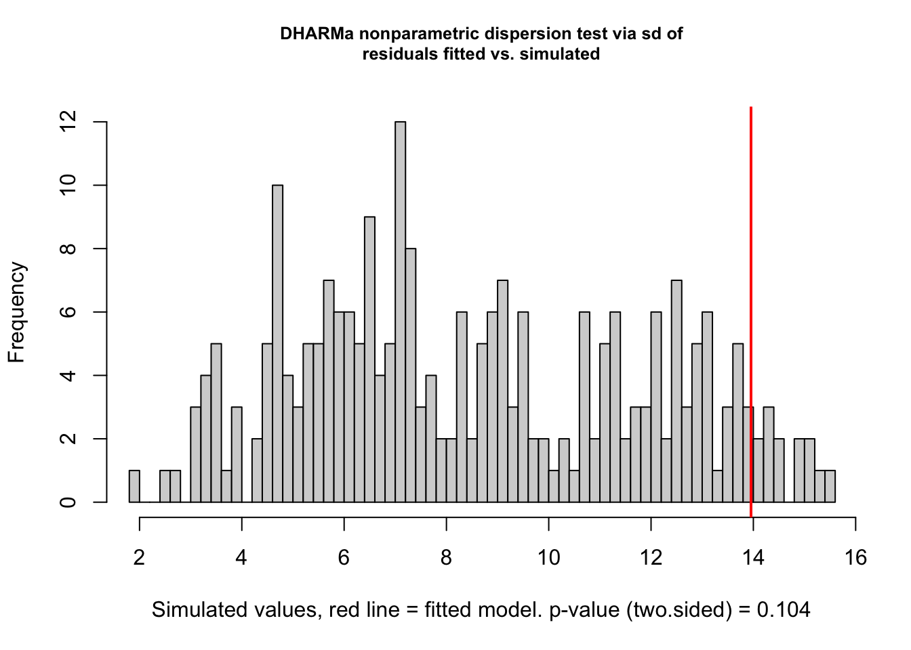
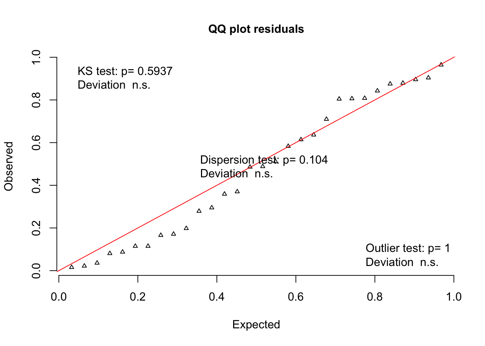
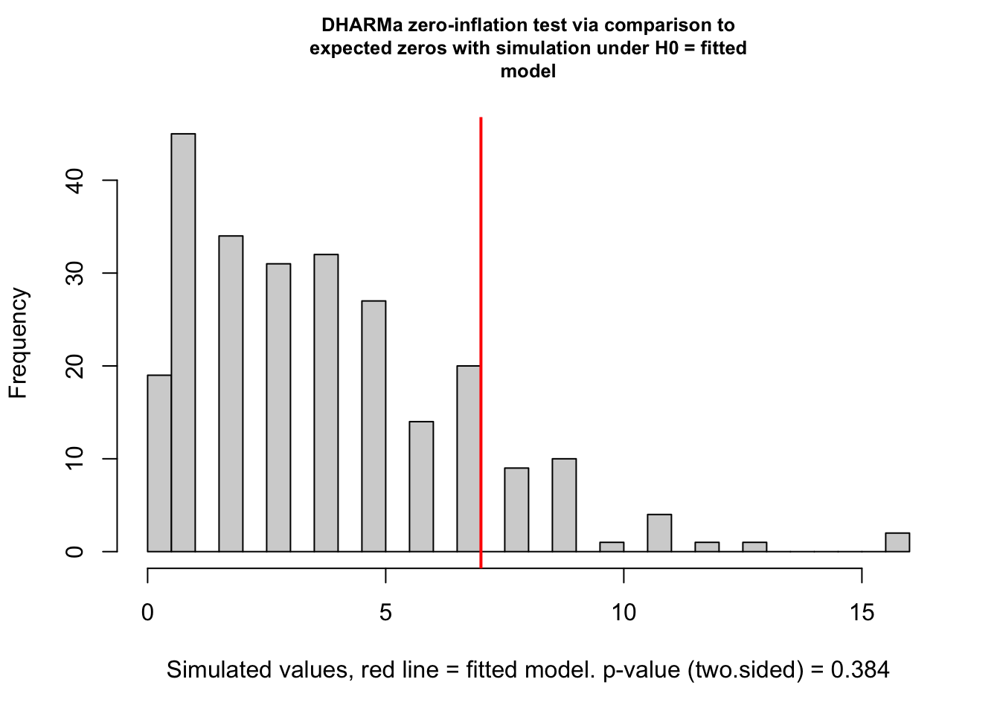
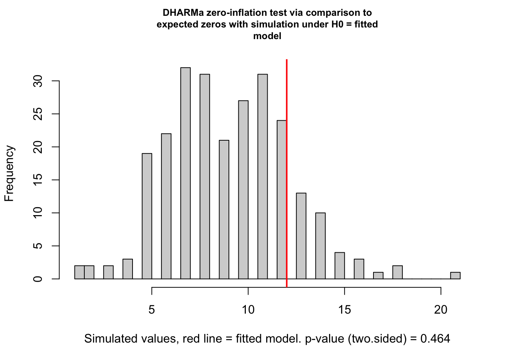
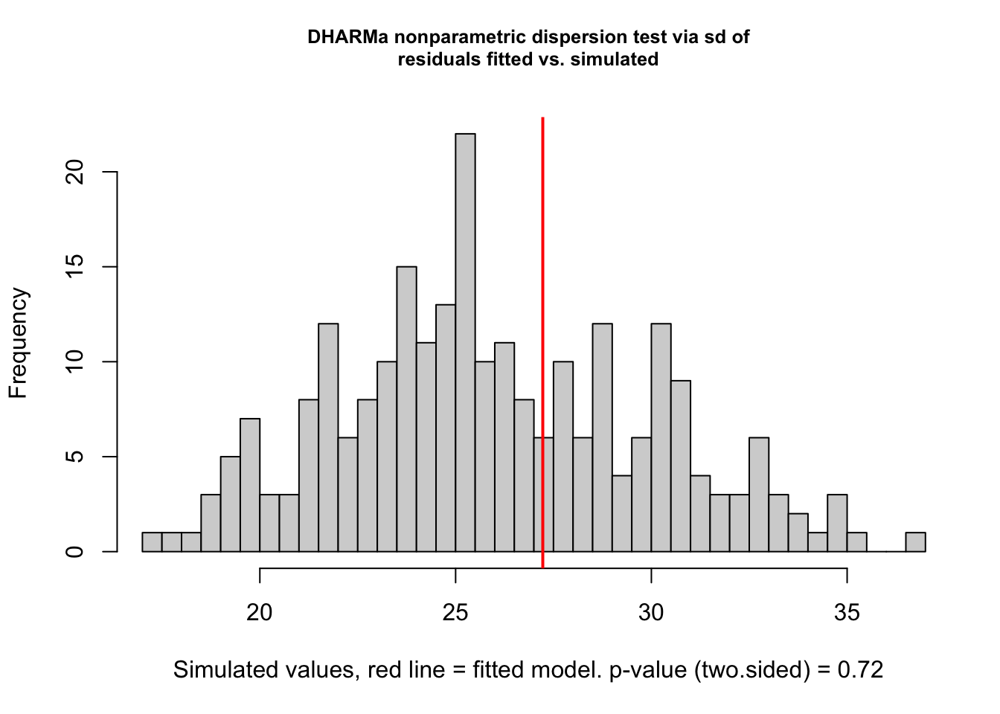
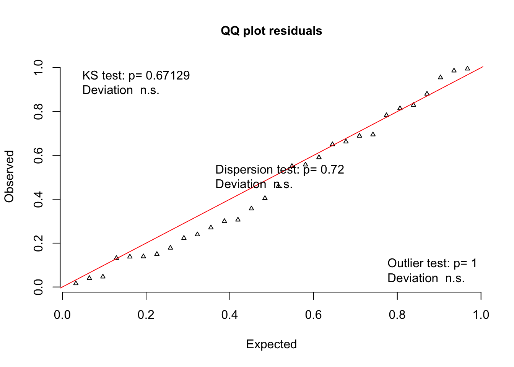
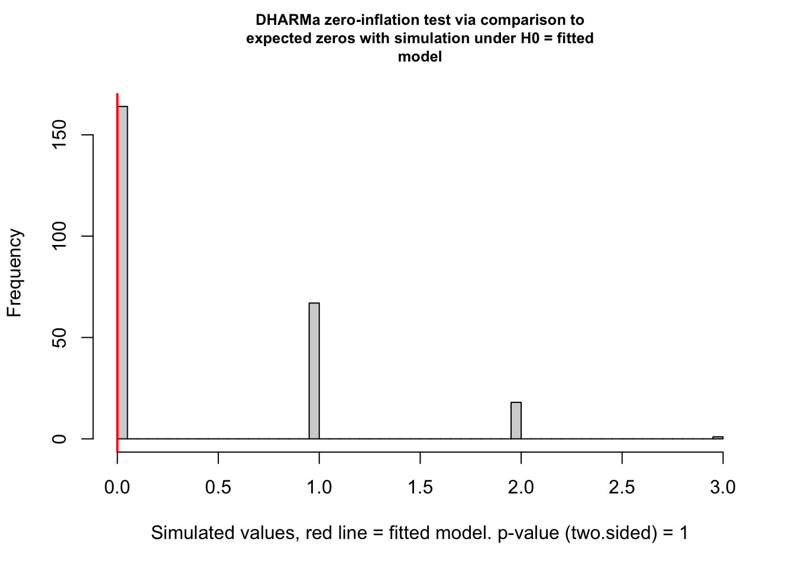
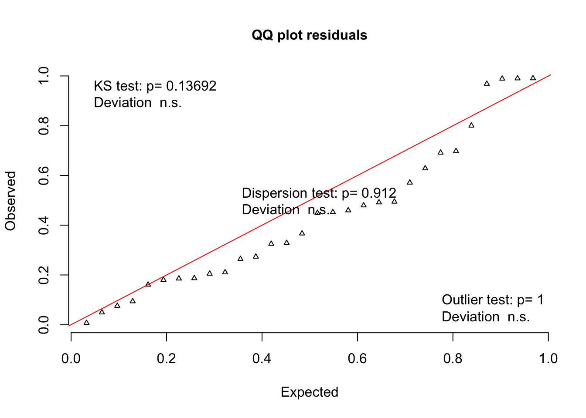
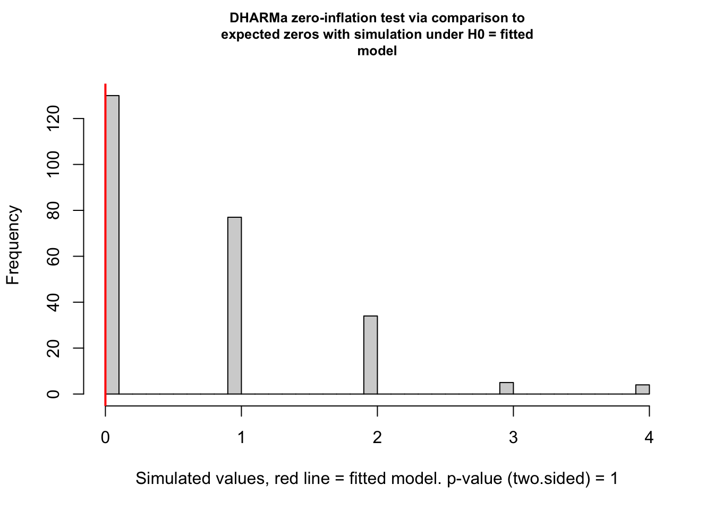

Rest
### Remove individuals who did not achieve greater than 50% correct responses
### in last 2 days of training
data4 = data3 %>% group_by(id) %>% filter(all(prop.correct.training.last.2 > 0.5))
### Do individuals who are perform well in last 2 days of training shift preference initially
naive.model.high.performers = glmer(cbind(n.morning.colour.initial, n.afternoon.colour.initial) ~ time.of.day + (1 | cage/id),
data= data4, family = binomial)
summary(naive.model.high.performers)## Generalized linear mixed model fit by maximum likelihood (Laplace
## Approximation) [glmerMod]
## Family: binomial ( logit )
## Formula: cbind(n.morning.colour.initial, n.afternoon.colour.initial) ~
## time.of.day + (1 | cage/id)
## Data: data4
##
## AIC BIC logLik deviance df.resid
## 165.8 171.4 -78.9 157.8 26
##
## Scaled residuals:
## Min 1Q Median 3Q Max
## -2.9006 -0.7748 -0.2184 0.5950 2.4972
##
## Random effects:
## Groups Name Variance Std.Dev.
## id:cage (Intercept) 0.3505 0.5921
## cage (Intercept) 2.5761 1.6050
## Number of obs: 30, groups: id:cage, 15; cage, 5
##
## Fixed effects:
## Estimate Std. Error z value Pr(>|z|)
## (Intercept) -0.3409 0.7704 -0.442 0.658
## time.of.day2afternoon 0.0636 0.2465 0.258 0.796
##
## Correlation of Fixed Effects:
## (Intr)
## tm.f.dy2ftr -0.133### no p = 0.79# model checking
simulationOutput <- simulateResiduals(fittedModel = naive.model.high.performers)
testDispersion(simulationOutput)
##
## DHARMa nonparametric dispersion test via sd of residuals fitted vs.
## simulated
##
## data: simulationOutput
## ratioObsSim = 1.6322, p-value = 0.104
## alternative hypothesis: two.sidedtestUniformity(simulationOutput = simulationOutput)
##
## One-sample Kolmogorov-Smirnov test
##
## data: simulationOutput$scaledResiduals
## D = 0.13543, p-value = 0.5937
## alternative hypothesis: two-sidedtestZeroInflation(simulationOutput)
##
## DHARMa zero-inflation test via comparison to expected zeros with
## simulation under H0 = fitted model
##
## data: simulationOutput
## ratioObsSim = 1.8116, p-value = 0.384
## alternative hypothesis: two.sided# model ok # pull out individuals below criterion
data5 = data3 %>% group_by(id) %>% filter(any(prop.correct.training.last.2 < 0.51))
### Do individuals who were incorrect at high rate shift preference initially
### this model fails to converge, rendering p-values meaningless
### unless we include an observation level random effect this is what
### the next lines of code before the model does
df = data.frame(OLRE=c(1,2,3,4,5,6,7,8,9,10,11,12,13,14,15,16,17,18,19,20,21,22,23,24,25,26,27,28,29,30))
data5 <- cbind(data5, OLRE = df$OLRE)
naive.model.low.performers = glmer(cbind(n.morning.colour.initial, n.afternoon.colour.initial) ~ time.of.day + (1 | id), data =data5, family = binomial, control=glmerControl(optimizer="bobyqa",optCtrl=list(maxfun=2e5)))
summary(naive.model.low.performers)## Generalized linear mixed model fit by maximum likelihood (Laplace
## Approximation) [glmerMod]
## Family: binomial ( logit )
## Formula: cbind(n.morning.colour.initial, n.afternoon.colour.initial) ~
## time.of.day + (1 | id)
## Data: data5
## Control: glmerControl(optimizer = "bobyqa", optCtrl = list(maxfun = 2e+05))
##
## AIC BIC logLik deviance df.resid
## 167.1 171.3 -80.5 161.1 27
##
## Scaled residuals:
## Min 1Q Median 3Q Max
## -2.4888 -0.5754 -0.2477 0.6497 3.1263
##
## Random effects:
## Groups Name Variance Std.Dev.
## id (Intercept) 7.259 2.694
## Number of obs: 30, groups: id, 15
##
## Fixed effects:
## Estimate Std. Error z value Pr(>|z|)
## (Intercept) -1.5785 0.7465 -2.115 0.0345 *
## time.of.day2afternoon 0.2638 0.2374 1.111 0.2664
## ---
## Signif. codes: 0 '***' 0.001 '**' 0.01 '*' 0.05 '.' 0.1 ' ' 1
##
## Correlation of Fixed Effects:
## (Intr)
## tm.f.dy2ftr -0.147allEffects(naive.model.low.performers)## model: cbind(n.morning.colour.initial, n.afternoon.colour.initial) ~
## time.of.day
##
## time.of.day effect
## time.of.day
## 1morning 2afternoon
## 0.1710040 0.2116913### no p = 0.56# model checking
simulationOutput <- simulateResiduals(fittedModel = naive.model.low.performers)
testDispersion(simulationOutput)
##
## DHARMa nonparametric dispersion test via sd of residuals fitted vs.
## simulated
##
## data: simulationOutput
## ratioObsSim = 1.6798, p-value = 0.12
## alternative hypothesis: two.sidedtestUniformity(simulationOutput = simulationOutput)
##
## One-sample Kolmogorov-Smirnov test
##
## data: simulationOutput$scaledResiduals
## D = 0.10566, p-value = 0.8565
## alternative hypothesis: two-sidedtestZeroInflation(simulationOutput)
##
## DHARMa zero-inflation test via comparison to expected zeros with
## simulation under H0 = fitted model
##
## data: simulationOutput
## ratioObsSim = 1.3032, p-value = 0.464
## alternative hypothesis: two.sided# model ok ### Do individuals who were correct at a high rate shift preference when trained
### Cage random effect dropped singular fit issue
trained.model.high.performers = glmer(cbind(n.morning.colour.test, n.afternoon.colour.test) ~ time.of.day * final.presentation + (1 | id), data= data4, family = binomial)
summary(trained.model.high.performers) ## Generalized linear mixed model fit by maximum likelihood (Laplace
## Approximation) [glmerMod]
## Family: binomial ( logit )
## Formula: cbind(n.morning.colour.test, n.afternoon.colour.test) ~ time.of.day *
## final.presentation + (1 | id)
## Data: data4
##
## AIC BIC logLik deviance df.resid
## 211.1 218.1 -100.5 201.1 25
##
## Scaled residuals:
## Min 1Q Median 3Q Max
## -3.0388 -0.8369 0.0163 0.9019 2.3264
##
## Random effects:
## Groups Name Variance Std.Dev.
## id (Intercept) 0.4679 0.684
## Number of obs: 30, groups: id, 15
##
## Fixed effects:
## Estimate Std. Error z value
## (Intercept) 0.5751 0.2976 1.932
## time.of.day2afternoon -0.4348 0.1734 -2.507
## final.presentationreversed -0.1516 0.3953 -0.383
## time.of.day2afternoon:final.presentationreversed 0.1481 0.2477 0.598
## Pr(>|z|)
## (Intercept) 0.0533 .
## time.of.day2afternoon 0.0122 *
## final.presentationreversed 0.7014
## time.of.day2afternoon:final.presentationreversed 0.5499
## ---
## Signif. codes: 0 '***' 0.001 '**' 0.01 '*' 0.05 '.' 0.1 ' ' 1
##
## Correlation of Fixed Effects:
## (Intr) tm.f.2 fnl.pr
## tm.f.dy2ftr -0.220
## fnl.prsnttn -0.752 0.166
## tm.f.dy2f:. 0.161 -0.702 -0.217### yes p = 0.01 and no significant effect of final presentation order # model checking
simulationOutput <- simulateResiduals(fittedModel = trained.model.high.performers)
testDispersion(simulationOutput)
##
## DHARMa nonparametric dispersion test via sd of residuals fitted vs.
## simulated
##
## data: simulationOutput
## ratioObsSim = 1.0494, p-value = 0.72
## alternative hypothesis: two.sidedtestUniformity(simulationOutput = simulationOutput)
##
## One-sample Kolmogorov-Smirnov test
##
## data: simulationOutput$scaledResiduals
## D = 0.12706, p-value = 0.6713
## alternative hypothesis: two-sidedtestZeroInflation(simulationOutput)
##
## DHARMa zero-inflation test via comparison to expected zeros with
## simulation under H0 = fitted model
##
## data: simulationOutput
## ratioObsSim = 0, p-value = 1
## alternative hypothesis: two.sided# model ok ### Do individuals who were not correct at a high rate shift preference when trained
trained.model.low.performers = glmer(cbind(n.morning.colour.test, n.afternoon.colour.test) ~ time.of.day * final.presentation + (1 | cage/id), data= data5, family = binomial)
summary(trained.model.low.performers)## Generalized linear mixed model fit by maximum likelihood (Laplace
## Approximation) [glmerMod]
## Family: binomial ( logit )
## Formula: cbind(n.morning.colour.test, n.afternoon.colour.test) ~ time.of.day *
## final.presentation + (1 | cage/id)
## Data: data5
##
## AIC BIC logLik deviance df.resid
## 231.3 239.7 -109.7 219.3 24
##
## Scaled residuals:
## Min 1Q Median 3Q Max
## -5.5930 -0.4260 -0.0156 0.7363 3.5905
##
## Random effects:
## Groups Name Variance Std.Dev.
## id:cage (Intercept) 1.8356 1.3548
## cage (Intercept) 0.9534 0.9764
## Number of obs: 30, groups: id:cage, 15; cage, 4
##
## Fixed effects:
## Estimate Std. Error z value
## (Intercept) 0.1037 0.9878 0.105
## time.of.day2afternoon 0.4600 0.3912 1.176
## final.presentationreversed 0.4058 1.2871 0.315
## time.of.day2afternoon:final.presentationreversed -0.3166 0.4146 -0.764
## Pr(>|z|)
## (Intercept) 0.916
## time.of.day2afternoon 0.240
## final.presentationreversed 0.753
## time.of.day2afternoon:final.presentationreversed 0.445
##
## Correlation of Fixed Effects:
## (Intr) tm.f.2 fnl.pr
## tm.f.dy2ftr -0.097
## fnl.prsnttn -0.766 0.074
## tm.f.dy2f:. 0.092 -0.942 -0.082### no p = 0.24# model checking
simulationOutput <- simulateResiduals(fittedModel = trained.model.low.performers)
testDispersion(simulationOutput)
##
## DHARMa nonparametric dispersion test via sd of residuals fitted vs.
## simulated
##
## data: simulationOutput
## ratioObsSim = 1.0454, p-value = 0.912
## alternative hypothesis: two.sidedtestUniformity(simulationOutput = simulationOutput)
##
## One-sample Kolmogorov-Smirnov test
##
## data: simulationOutput$scaledResiduals
## D = 0.20566, p-value = 0.1369
## alternative hypothesis: two-sidedtestZeroInflation(simulationOutput)
##
## DHARMa zero-inflation test via comparison to expected zeros with
## simulation under H0 = fitted model
##
## data: simulationOutput
## ratioObsSim = 0, p-value = 1
## alternative hypothesis: two.sided# model ok ### Naive preference data plot for high performers
g <- ggplot(data4, aes(time.of.day, (n.morning.colour.initial/(n.morning.colour.initial+n.afternoon.colour.initial)))) + theme_classic()
a <- g + geom_jitter(size =2, alpha = .25, width = 0.02) +
stat_summary(
geom = 'point',
fun = 'mean',
size = 4.5,
shape = 15) +
stat_summary(geom = 'errorbar',
fun.data = 'mean_ci', position = position_dodge(width=0), width = 0.1)
naive.pref.plot <- a + ylab('Morning reward colour preference') + xlab("Time of Day") + ggtitle("Naive shift in preference") +
theme(axis.text=element_text(size=10), axis.title=element_text(size=11,face="bold"),
plot.title = element_text(size=12, hjust=0.5)) + ylim(-0.05, 1.05) + geom_line(aes(group = id), color = 'grey')
### Trained preference data plot for high performers
g2 <- ggplot(data4, aes(time.of.day, (n.morning.colour.test/(n.morning.colour.test+n.afternoon.colour.test)))) + theme_classic()# +
scale_colour_manual(values = c('#353b48', '#e84118'))## <ggproto object: Class ScaleDiscrete, Scale, gg>
## aesthetics: colour
## axis_order: function
## break_info: function
## break_positions: function
## breaks: waiver
## call: call
## clone: function
## dimension: function
## drop: TRUE
## expand: waiver
## get_breaks: function
## get_breaks_minor: function
## get_labels: function
## get_limits: function
## guide: legend
## is_discrete: function
## is_empty: function
## labels: waiver
## limits: NULL
## make_sec_title: function
## make_title: function
## map: function
## map_df: function
## n.breaks.cache: NULL
## na.translate: TRUE
## na.value: NA
## name: waiver
## palette: function
## palette.cache: NULL
## position: left
## range: <ggproto object: Class RangeDiscrete, Range, gg>
## range: NULL
## reset: function
## train: function
## super: <ggproto object: Class RangeDiscrete, Range, gg>
## rescale: function
## reset: function
## scale_name: manual
## train: function
## train_df: function
## transform: function
## transform_df: function
## super: <ggproto object: Class ScaleDiscrete, Scale, gg>b <- g2 + geom_jitter(size =2, alpha = .25, width = 0.02) +
stat_summary(
geom = 'point',
fun = 'mean',
size = 4.5,
shape = 15) +
stat_summary(geom = 'errorbar',
fun.data = 'mean_ci', position = position_dodge(width=.05), width = 0.1)
trained.pref.plot <- b + ylab('Morning reward colour preference') + xlab("Time of Day") + ggtitle("Trained shift in preference") +
theme(axis.text=element_text(size=10), axis.title=element_text(size=11,face="bold"),
plot.title = element_text(size=12, hjust=0.5)) + ylim(-0.05, 1.05) + geom_line(aes(group = id), color = 'grey')
ggarrange(naive.pref.plot, trained.pref.plot, nrow = 1)
#### Plot end #######